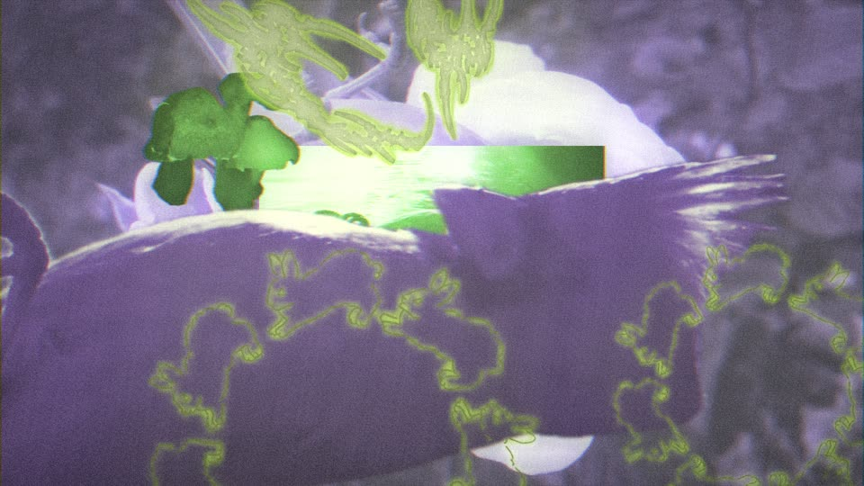
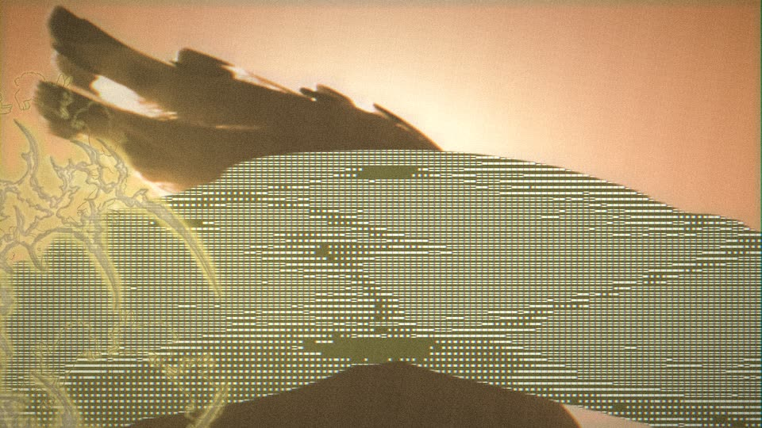
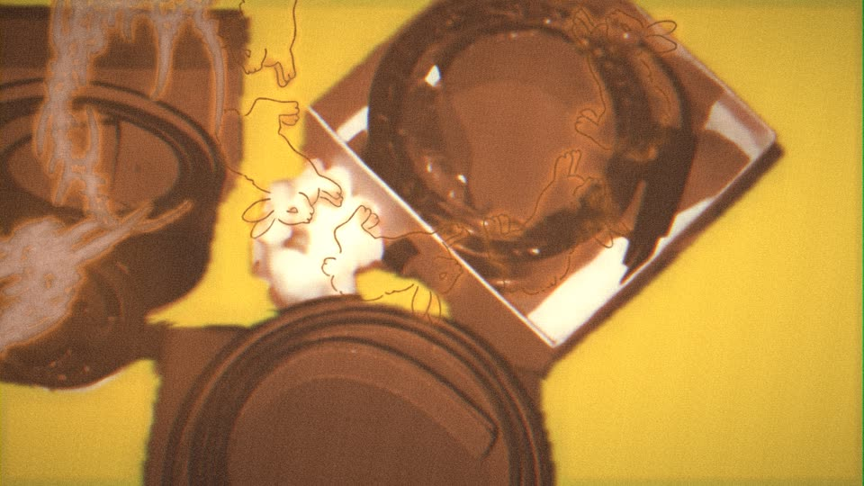
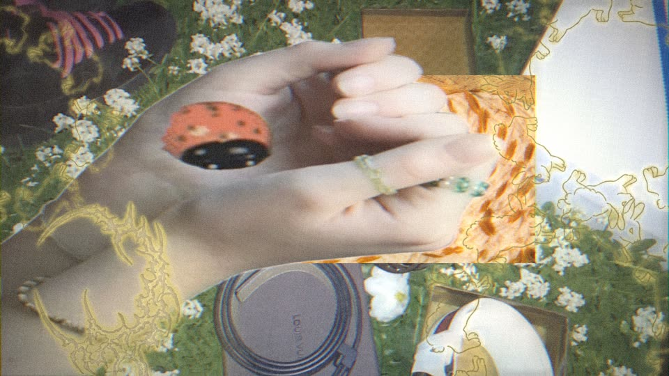
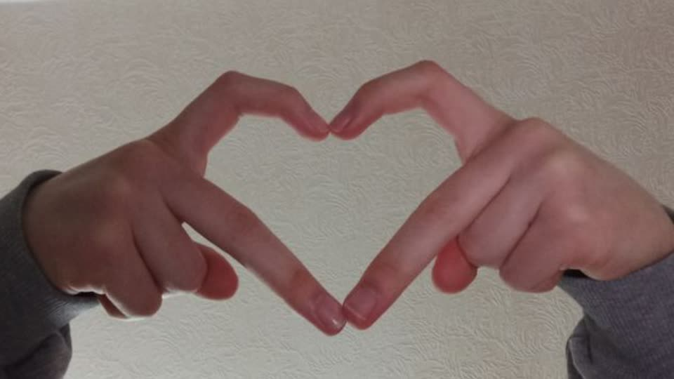
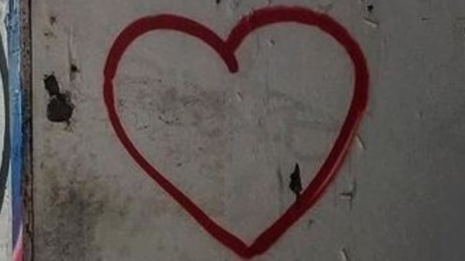

Cuadraditos con caché que siguen el movimiento + puntitos en rejilla en las luces.
Todo en una página: efectos actuales, descartados y la Biblia antigua.
Cuadraditos con caché que siguen el movimiento + puntitos en rejilla en las luces.
Probados como overlay el 9/11: "horribles". No hay vídeo.

Si el sujeto viene cortado por el borde del clip, ese lado se pega al mismo borde de la pantalla y crece hasta el centro (65% mínimo). Cortado por dos lados opuestos: de lado a lado. Feedback de Dani: nada de cortes flotando. Motor de Stefano y Kariñosa ( cuto

1 de cada 5 recortes sale sin respetar su proporción (ancho ×0,5 a ×2). En la captura, además, con glifos. Motor de Stefano <img

Duotono con la paleta de Dani de cada tema. Dani: que no sea un efecto de color tan fuerte; la paleta también sale de qué clips se eligen. Uva, Stefano <img

1 de cada 5 fondos, recortes e insertos va en su color real dentro de un tema tintado. Stefano
El nuevo entra por las zonas oscuras del que se va. La de Uva; va en todos los temas. transitions_fx · GUXO_FX.toe · 15 fotogramas <video
Al revés: entra por las luces. transitions_fx · GUXO_FX.toe · 15 fotogramas <video
La luz se mide por celdas de 20 px y el nuevo entra a cuadros. transitions_fx · GUXO_FX.toe · 15 fotogramas <video
Umbral con ruido: entra como una fotocopia que se quema. transitions_fx · GUXO_FX.toe · 15 fotogramas <video
El nuevo aparece por sus propias luces, como si se revelara. transitions_fx · GUXO_FX.toe · 15 fotogramas <video
Corazón de borde duro que crece desde el centro. transitions_fx · GUXO_FX.toe · 15 fotogramas <video
Estrella de 5 puntas de borde duro. transitions_fx · GUXO_FX.toe · 15 fotogramas <video
Se abre desde el centro hacia los lados. transitions_fx · GUXO_FX.toe · 15 fotogramas
Ahora como la referencia de Dani: sujeto en líneas horizontales de un color sobre blanco; más oscuro, línea más gruesa. <video
El sujeto salta de sitio, tamaño y clip cada 2 golpes. <video
Puntitos en rejilla fija de 10 px, todos iguales, solo en las partes de luz: brillos, reflejos y contraluces. Sin movimiento ni caché. <video
Donde hay movimiento, bloques con el vídeo de un segundo antes (caché), a color y sin negativo, sobre el clip actual. <video
Detección de movimiento con círculos sobre negro, vídeo retrasado dentro. <video
Duotono azul con semitono de 5 px, tribales amarillos con halo violeta. Limpio: sin grano ni franja lateral; todo en múltiplos de 5 (tribales cada 5 golpes, base cada 10). Es la portada de Kariñosa. <video
Tribales con resplandor, analógico quemado, recortes teñidos integrados. Base de Uva. <video
Dentro de audio_cutter : cajas de detección por defecto en rachas; pantalla partida mitad y mitad. <video
25 puntos más marcados (ojos, picos, bordes) seguidos con flujo óptico, estela de 25 fotogramas, en el estilo de las cajas OpenCV: cuadradito de 10 px, grosor 1, etiqueta Hershey cada 5 puntos, mismo color que las cajas. GUXO_FX.toe <video
circles_fx en modo pantalla sobre el clip, para pinchar a ratos. GUXO_FX.toe
Variación de tracking_fx. Los mismos puntos seguidos se agrupan en 5 objetos; cada uno lleva su caja con esquinas marcadas, etiqueta obj_00…obj_20 y una confianza que oscila. Estética de depuración de visión artificial. <video
Variación de tracking_fx. 25 puntos seguidos con flujo óptico unidos en triángulos: una constelación que se deforma con la imagen. Coordenadas en 1 de cada 5 puntos. <img

Series de fotos (manos haciendo corazón, corazones en la naturaleza) encuadradas por código para que el corazón caiga siempre en el mismo sitio y tamaño. Ritmo fijo con el tempo (12 por segundo, 16 en los picos). Entra en los momentos candentes del máster. Tra

Brillo + agudos + intensidad del máster en lo más alto del tema, suavizado a 1 s. Marca dónde pinchar lo fuerte. Tra (35% del tema)